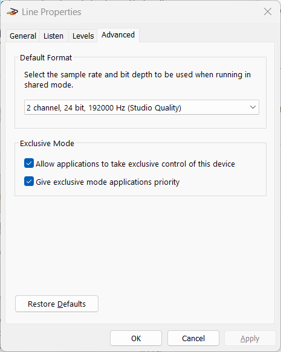

Настільний застосунок відкриває пристрій захоплення самостійно, з точно тією частотою дискретизації та розрядністю, які ви обираєте в Налаштуваннях ▸ Аудіо. Phonalyser.web цього не може. Вкладка браузера захоплює через дозвіл на мікрофон / лінійний вхід, і браузер віддає саме те, з чим пристрій уже працює — його формат спільного режиму Windows (shared mode). Застосунок може прочитати цю частоту, але не може її задати. Тому, щоб вимірювати на повній смузі вашої карти, спершу потрібно підняти частоту в Windows; це робиться один раз і зберігається.

24 біти, 192000 Гц (або 384000 Гц, якщо
обладнання його пропонує).Після перезавантаження вигляди FFT та частотної характеристики можуть працювати аж до половини нової частоти. Фактично отриману частоту показано в рядку стану під час запуску захоплення.
Генератор і розгортка частотної характеристики відтворюють через аудіовихід браузера, а браузер рендерить із частотою спільного режиму Windows вихідного пристрою. Якщо внутрішня частота застосунку не збігається з частотою пристрою, браузер тихо передискретизує сигнал до частоти пристрою — невидима стадія, що спотворює нібито чистий тон. Виявивши це, генератор виводить попередження на кшталт:
WARNING: output device runs at 48000 Hz — the browser silently
resamples 192000 Hz to it; set the Windows output device format to
192000 Hz for a clean signal
Виправлення ідентичне: у розділі Звук відкрийте вкладку
Відтворення, потім Властивості ▸ Додатково пристрою і задайте
його Формат за замовчуванням на ту саму високу частоту (напр.
24 біти, 192000 Гц), потім натисніть Застосувати. Коли
і вхід, і вихід працюють на рідній частоті карти, увесь тракт сигналу
лишається побітово чистим, без прихованого перетворення на жодному з
кінців.